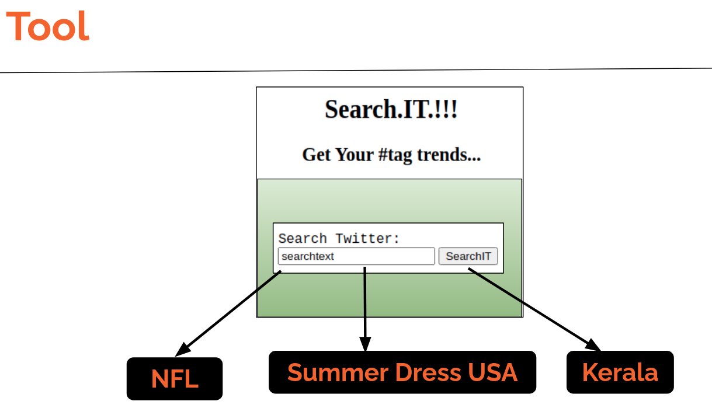

Solution Walk¶
Let’s walk through 3 searches using the tool and the real time results retrieved from the tool.This type of realtime aggregated data can enable Realtime market analytics.
Search Twitter screen¶
Customer can insert search string Example string :
NFL
Summer Dress USA
Kerala
We can see how the live Twitter data is quickly summarize and return current trends
Case 1 :¶
On searching NFL the screen displays details on NFL Drafts that were created on the same day the query was run
Case 2 :¶
On searching for “Summer Dress USA” we see some of the most common trends in the clothing market for summer in America
Case 3 :¶
Kerala is a state in India and on a quick search, we can see the top states where we had elections on the same day .We also see names of top political parties like BJP and LDF being reference more often.